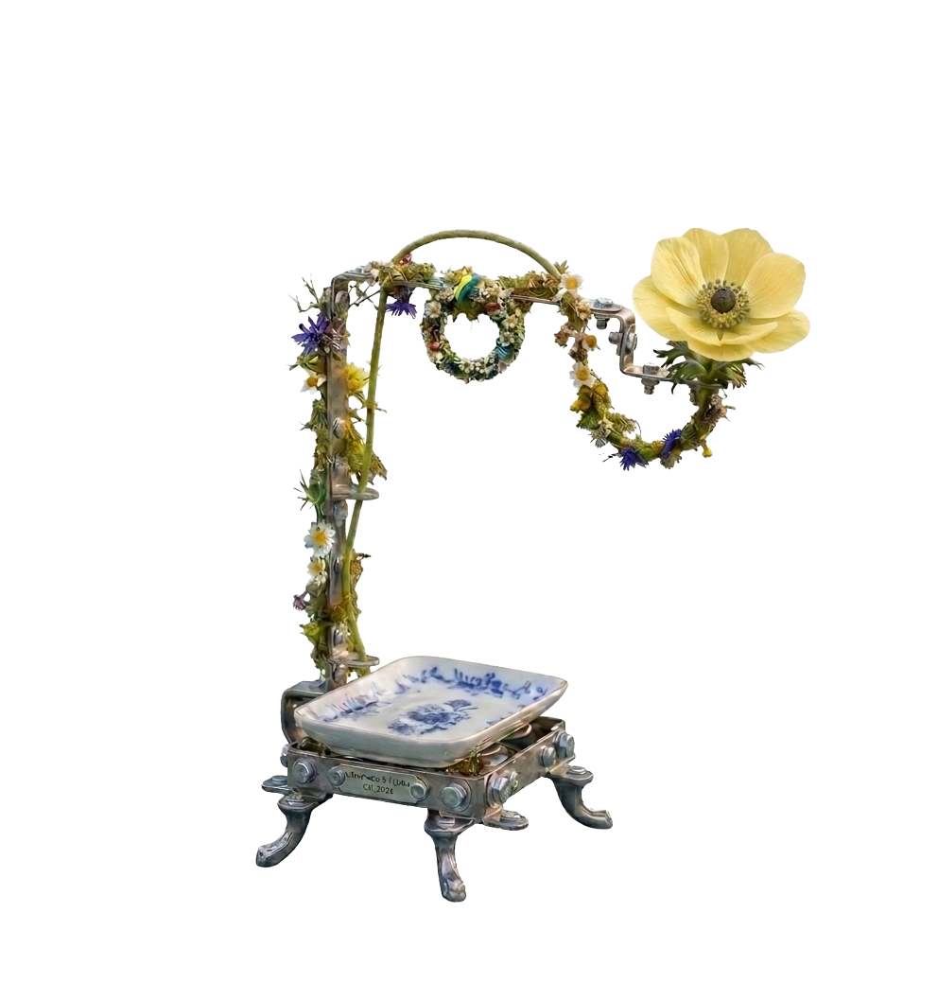

Salon AI · Stockholm · 1 July 2026
Europe may be the first economy governed as a circular system. The unresolved question: can AI agents that understand that system actually become part of the solution?
A private evening for people working at the edge of that question — with AI as the analytical medium, fashion as the working test bed, and learnings that travel.
Private salon · Curated group · By invitationHosted by
Vanessa Rothschild
Fifteen years inside Europe's circular industries — from policy frameworks to the supply chains regulation actually has to bend.
Franziska Wittleder
Built AI systems at scale across Amazon, Writer, SoundCloud. Treats AI as analytical infrastructure, not a product to demo.
The evening's question
How do we build AI agents that grasp the reality of the circular economy — and become part of the solution?
Europe lacks the scale advantages of the United States, the energy economics of China, the frontier-tech velocity of either. What it may dominate is industrial circularity — translated into systems regulation. The open question is whether AI built on top of that system makes it work, or just makes it legible.

The premise
The European Union has written the most ambitious circular economy framework in the world. Whether it translates into economic strength remains unanswered — including by the institutions that wrote it.
We start with fashion — the industry that has already gone furthest into the circular framework. Sorting, reuse, recycling, EPR — the economics are real, and the friction is too. Whatever AI agents learn there transfers to construction, packaging, electronics, and beyond.
AI as interpretive infrastructure, not automation tool. That is the analytical premise of the evening.
How the evening operates
The first part of the evening is hands-on. Each guest builds an analytical AI assistant fitted to their own work — not as an AI lesson, but as the operating instrument for the rest of the evening.
In the second part, we turn the assistants outward — onto Europe's circular framework, starting with fashion. Where regulation meets economic logic. Where ambition meets constraint. Where AI either helps or just produces nice charts.
By the end of the evening, the room has produced something concrete: a working interrogation of Europe's circular framework, built by the people in it — starting with fashion, but not stuck there.
Practical details
This is a private, curated gathering. Further details will follow upon confirmation.
Reply to confirm →